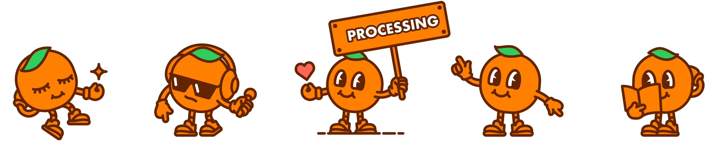

Loading...
Loading...
Role: Brand & UI/UX Designer
Founded in 2016 in Singapore, IJOOZ is a pioneering IoT technology company specializing in smart vending solutions. The company's flagship product is a vending machine that dispenses freshly squeezed orange juice, using four whole oranges per serving without any added sugar, water, or preservatives. As of 2023, IJOOZ has expanded its presence to over 33 countries, including a significant footprint in Japan, where it operates more than 400 machines.
In 2020, I collaborated with IJOOZ to revamp its brand identity and user experience. The initial challenge was the inconsistency in machine designs across different regions, which diluted brand recognition and consumer trust.
To address this, I developed a cohesive visual identity, including a new logo, brand elements, and a friendly mascot character. These elements were applied uniformly across all machines, ensuring a consistent and appealing brand presence.
#FreshEasy For Everyone
Understanding the importance of user interaction, I also redesigned the machine's UI to be more intuitive and engaging. The updated interface features clear instructions, real-time feedback, and subtle animations to guide users through the purchasing process seamlessly. These enhancements led to a significant improvement in user engagement metrics: a 2X increase in successful transactions, a 40% reduction in transaction time, and a notable rise in positive user feedback.
Beyond the vending machines, IJOOZ offers a mobile app that allows users to locate nearby machines, top-up their accounts, and participate in membership programs. This integration not only enhances user convenience but also opens avenues for corporate partnerships, enabling companies to provide IJOOZ credits as employee benefits.
To support its operations, I assisted in designing IJOOZ's backend systems, including sales analytics dashboards and machine maintenance monitoring tools. These systems empower the IJOOZ team to efficiently manage inventory, monitor machine performance, and make data-driven decisions to optimize operations.
IJOOZ's commitment to innovation and user-centric design has positioned it as a leader in the smart vending industry, transforming the way consumers access fresh, healthy beverages on the go.